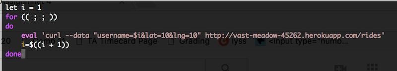

Security Write-Up by Julia Hedrick
Introduction
I have been hired to find security vulnerabilities in Reed Thomas-McLean's second and third assignment. His application is: vast-meadow-45262.herokuapp.com
Methodology
I did not use any tool. My methodology was researching different vulnerabilities and trying to take advantage of them in the server I was given. This took some trial and error. The form of testing I used was black box. I did not use white box testing to find these vulnerabilities.
Abstract of Findings
This website has been found to be vunerable to multiple kinds of security vulnerabilities. The first being a a Denial of Service Attack, which is an attack where the service is made unvailable due to, for example, flooding the server with information. The site is also vulnerable to a Cross Site Scripting Attack. XSS is the use of javascript in an input, query string, or post request parameter that allows a user to change the DOM or Javascript of a site in real time. This can have small consequences like an annoying alert message or larger, more severe consequences like the exposure of user sensitive data. The last vulnerability that I found was the exposure of sensitive data from a mongodb database using php, a language once commonly used for web development before the rise of things like node.js and the express framework. This allows an attacker, using a simple comparison, to see data in the data base that they normally would not have access to. For example, asking for all the information where the username is not equal to JANET, will return all the other documents in the collection.
Issues Found
Denial of Service Attack
- Location: /rides post request of vast-meadow-45262.herokuapp.com
- Severirty: This vulnerability, on a scale of mild to severe, is medium. This is because, on this website, it would take a long time for this kind of attack to be successful. This is due to the fact that there are only three parameters for the post request.
- Description: A denial of service attack is an attempt to make the web service unavailable to users. I tried to do this by flooding the server with an infinite amount of post requests, which is a common method. I did this by writing a shell script. A distributed denial of service attack is one where the incoming traffic comes from multiple sources. This could be done, in this case, by running the script in multiple terminal windows.
- The shell script I used was:

- Proof of vulnerability: There is no direct proof for this vulnerability as it would take a long time to do because there are only three parameters to the post request. Theoretically, this would impact the post request and cause an application error.
- Resolution:
- A distributed denial of service attack can be combated by blocking one of the incoming traffic lines.
- Application frontend hardware can be used to deem inocming data as priority, normal, or dangerous.
- Firewalls can deny the attacker any access.
Cross Site Scripting
- Location: vast-meadow-45262.herokuapp.com/
- Severirty: The severity of this vulnerability is severe. Cross Site Scripting allows the HTML and Javascript of a webpage to be changed dynamically. Although I just sent an alert script, one looking to do more harm could easily do it. For example, XSS can also put users at risk of exposure to fake information, code injections, and stolen cookie information.
- Description: I found the vulnerability using the curl command: curl --data "username=<script>alert('XSS vulnerability');</script>"&lat=39&lng=50" https://vast-meadow-45262.herokuapp.com/rides. I used the username attribute because the lat and long were successfully checked to see if they were of the float type or not. Clearly, the username was not sanitized.
- Proof of vulnerability:

- Resolution: To resolve this issue, all user input should be sanitized in order to prevent user input from being javascript that changes the state of the website. To prevent it from being interpretted as code, angle brackets can be changed to < or >.
- Other: This vulnerability means that this application is also vulnerable to html injections. This form of injection is much weaker than one of javascript, however, it did allow me to use an image as the username of a passenger, which was not the intention of the one writing the application.
Sensitive Data Exposure with Mongodb Injection Attack
- Location: vast-meadow-45262.herokuapp.com/vehicles.json
- Severirty: This vulnerability is severe because it allows hackers to indirectly have access to potentially sensitive data like location. This problem, in a setting with username, passwords, and credit card information is especially severe.
- Description: When using the query string: username[$ne]=JANET, I was able to gain access to information about all the other vehicles in the collection. This is known as mongodb injection attack with php. The use of [$ne] in php, a language that was once commonly used for web development, turns the query into an associative array, which allows the return to include a lot of data.
- Proof of vulnerability:

- Resolution: This kind of vulnerability can be prevented by stopping the use of comparison operators. A function that replaces or removes all special characters could prevent this. Or, the input can be casted to strings. As usual, ALL inputs should be sanitized.
Conclusion
In conclusion, this website is vulnerable to at least three security attacks. The first line of defense should be sanitizing any user input from query strings, forms, or post request, as user input should never be trusted. As a denial of service attack would take a significant amount of time for this website, I would suggest investing in application frontend hardware to prevent an attack if it ever becomes a problem. I also noticed that the website does not use the secure HTTP protocol. I recommend upgrading the application to use a more secure protocol, especially as user location is a main part of the data collected.
References
- http://blog.securelayer7.net/mongodb-security-injection-attacks-with-php/
- http://php.net/manual/en/mongo.security.php
- https://tuftsdev.github.io/WebProgramming/notes/web_security.html
- https://en.wikipedia.org/wiki/Denial-of-service_attack#Defense_techniques